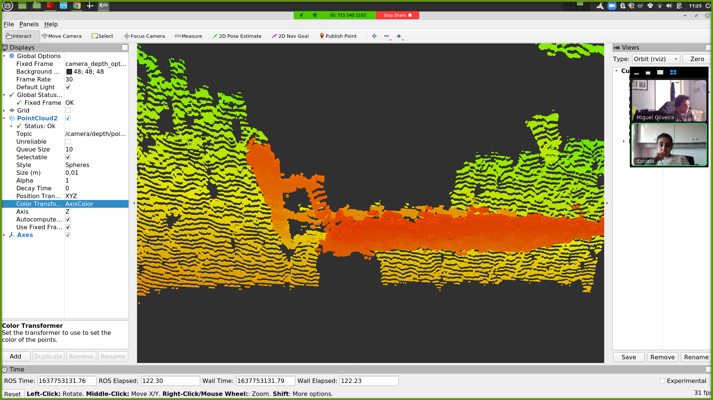

Study of Solutions to Identify the Charuco Shape in the Depth Image
To segment the shape of the calibration pattern in the depth image, several tests were conducted with edge detection and find contours algorithms to see how well the real depth images could be segmented. The following figure shows the result of these tests applied to the same depth image containing the chessboard.
The depth image is originally a float image, so none of the OpenCV toolbox functions works in these images. Conversion to uint8 is also not an option because the conversion would mean a significant loss of resolution, which caused even more difficulties to detect the difference between the chessboard and its support. For this reason, I opted to use the Skimage toolkit, that allows to apply inumerous filters to float images without a problem.
After seeing the none of these algorithms were producing a good segmentation of the chessboard, we developed our own flood fill algorithm by hand. This algorithm produces best results, but still a part of the support is still seen as a part of the chessboard. The flood fill algorithms work by evaluating the gradients between neighbor pixels, and the chessboard is distanced from the support around 20cm, which didn't make sense of why the flood and fill was considering it part of the chessboard, since its tolerance of distance to neighbor pixels is much smaller. This made us inspect why the depth point cloud to investigate why this was happenings
The following image shows the point cloud in the area where the support is appearing as part of the chessboard. As we can see, there is a slope between the actual chessboard and the support that appears next to it. Apparently this is a common problem in range sensors: when the distance between two objects is short, the adjacent infrared rays that are projected to measure the distances are too close and create a misperception of the 3D shapes.
To correct this problem I propose two complementary solutions:
- Paint the chessboard support with matt black paint, which is a color that is very badly perceived by depth sensors, which could help to mask the support in the image
- Add a new horizontal beam to the support, as seen in the following image, with a counterweight on the other end of this beam, that allows to adapt the already existing support to move the chessboard further away from the support, which hopefully will solve the slope problem in the depth images/point clouds.
TODO
- Check inconsistencies in calibration results with real data
- Adapt ATOM to calibrate RGBD sensors.
- Improve calibration pattern support to improve the depth images
- Define solution to detect calibration pattern in depth image
Issues
Add depth component to ATOM's framework - open
Create ids to identify sensors to label instead of identification through message type - closed
Create metadata field on dataset - closed
Create conversion script for dataset version 2 - open
Chessboard support - documentation
(opened but not this week's work)